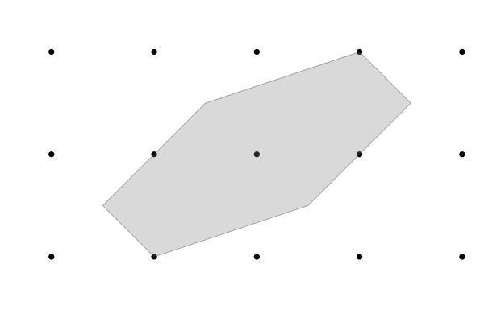

This appendix serves as a reference for RationalPolygons.jl, a Julia package for computations with rational convex polygons. RationalPolygons.jl does not make use of any external computer algebra system, but implements all necessary algorithms, including two-dimensional euclidean geometry, from scratch in pure Julia. This allows for quite good performance, with computations involving billions of polygons being feasible on a personal computer.
Let us give an impression of RationalPolygons.jl by means of an example session. After loading in the package, we can create a polygon by calling the convex_hull function on a set of rational points:
julia> using RationalPolygonsjulia> P = convex_hull(RationalPoint{Int}[(-3//2,-1//2), (-1,-1), (1//2,-1//2), (3//2,1//2), (1,1), (-1//2,1//2)])Rational polygon of rationality 2 with 6 vertices.
Using Julia's plotting library, we can visualize the polygon:
julia> using PlotsERROR: ArgumentError: Package Plots not found in current path: - Run `import Pkg; Pkg.add("Plots")` to install the Plots package.julia> plot(P);ERROR: UndefVarError: plot not defined

Next, we compute some basic properties:
julia> number_of_interior_lattice_points(P)1julia> number_of_boundary_lattice_points(P)4julia> euclidean_area(P)3//1julia> ehrhart_quasipolynomial(P)2×3 Matrix{Int64}: 24 16 0 24 16 8julia> affine_automorphism_group(P)D2julia> gorenstein_index(P)4
Lastly, we verify that the polygon is equivalent to its own dual.
julia> dual(P)Rational polygon of rationality 2 with 6 vertices.julia> are_affine_equivalent(P, dual(P))true
The rest of this appendix is organized as follows: In Section $\ref{doc:2D-Geometry}$, we go over some basic functions for two-dimensional euclidean geometry over the rationals, such as computing the convex hull and intersecting lines. Section $\ref{doc:Polygons}$ covers the type of rational polygons as well as basic properties and normal forms. In Section $\ref{doc:Subpolygons}$, we discuss computation of subpolygons, following the approach from Section $\ref{subsec:subpolygons}$. Finally, Section $\ref{doc:Classifications}$ covers implementations of the classification algorithms from Chapter $\ref{chp:rational_polygons}$, Sections $\ref{sec:ldp_triangles_classification_by_picard_index}$ and $\ref{sec:ldp_polygons_classifications_by_gorenstein_index}$, as well as various classification algorithms by other authors.
This documentation is generated directly from the docstrings of the package's source code. An online version is available on its GitHub page [1]. Every documented item includes a clickable source link that directs to the corresponding line in the source code where it is defined. The content here refers to version v1.2.0-thesis of RationalPolygons.jl. All example sessions have been tested and verified to work with this version.